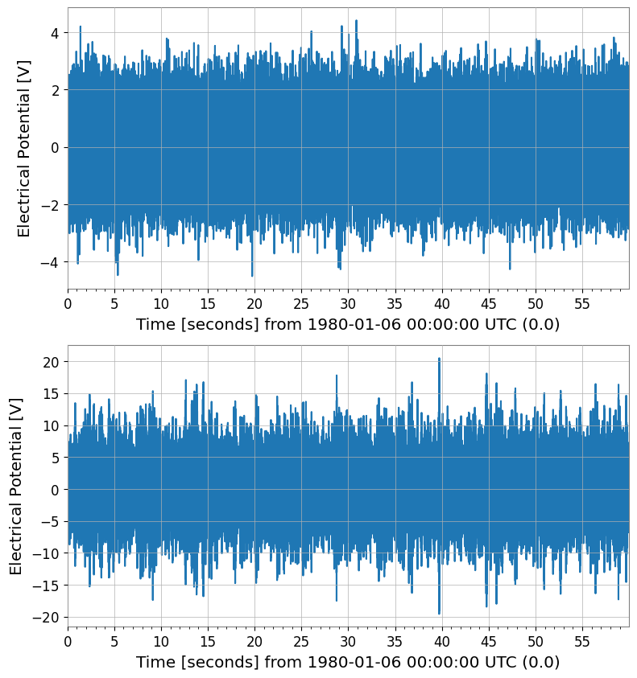

Note
This page was generated from a Jupyter Notebook. Download the notebook (.ipynb)
[1]:
# Skipped in CI: Colab/bootstrap dependency install cell.
Case navigation:
Back to the canonical gallery: Case Studies
Related reference surfaces: Reference Index, API: Frequency Series, Reference Topics
Neighboring featured workflows: Noise Budgeting, Active Damping
Tutorial: Transfer Function Measurement

This tutorial demonstrates how to use gwexpy to estimate the transfer function of a system from measured data, fit a physical model to the transfer function, and identify system parameters.
Scenario: We inject white noise into a mechanical vibration system (or electrical circuit) and measure its response. From this input-output data, we will determine the system’s resonance frequency \(f_0\) and quality factor \(Q\).
Workflow:
Data generation: Simulate an input signal (white noise) and the system output (resonant system response + measurement noise).
Transfer function estimation: Calculate the transfer function and coherence from the input-output time series data and plot the Bode plot.
Model fitting: Fit a theoretical model (such as a Lorentzian function) to the estimated transfer function to extract system parameters.
[2]:
import warnings
warnings.filterwarnings("ignore", category=UserWarning)
warnings.filterwarnings("ignore", category=DeprecationWarning)
import matplotlib.pyplot as plt
import numpy as np
from scipy import signal
from gwexpy import TimeSeries
from gwexpy.plot import Plot
1. Generating Experimental Data (Simulation)
We will conduct a virtual experiment.
System: Second-order resonant system (harmonic oscillator)
Resonance frequency \(f_0 = 300\) Hz
Quality factor \(Q = 50\)
Input: White noise
Measurement: Sampling frequency 2048 Hz, duration 60 seconds
The output signal will also include measurement noise.
[3]:
# --- Parameter Settings: choose a resonator whose f0 and Q mimic a narrow mechanical mode worth identifying from measured data. ---
fs = 2048.0 # Sampling frequency [Hz]
duration = 60.0 # Duration [s]
f0_true = 300.0 # True resonance frequency [Hz]
Q_true = 50.0 # True quality factor
# --- Time axis and input signal: broadband drive excites the plant across frequency so the resonance can be measured in one experiment. ---
t = np.linspace(0, duration, int(duration * fs), endpoint=False)
input_data = np.random.normal(0, 1, size=len(t)) # Broadband excitation approximates a swept identification drive without privileging one frequency.
# --- Physical System Simulation (using scipy.signal): this second-order plant stands in for a suspension or actuator resonance. ---
# H(s) uses f0 for the modal frequency and Q for damping width, so fitting them back out tests whether the measurement preserves the true mode shape.
w0 = 2 * np.pi * f0_true
num = [w0**2]
den = [1, w0 / Q_true, w0**2]
system = signal.TransferFunction(num, den)
# Simulate the time response to the broadband drive so transfer estimation sees the same finite-duration effects as a real measurement.
_, output_clean, _ = signal.lsim(system, U=input_data, T=t)
# --- Add measurement noise: coherence later tells us whether this readout noise is low enough to trust the estimated transfer function. ---
# Treat this as sensor/readout noise, which degrades phase and gain estimates where the plant response is weak.
measurement_noise = np.random.normal(0, 0.1, size=len(t))
output_data = output_clean + measurement_noise
# --- Wrap the drive and response as TimeSeries so the same workflow applies to experimental channels. ---
ts_input = TimeSeries(input_data, t0=0, sample_rate=fs, name="Input", unit="V")
ts_output = TimeSeries(output_data, t0=0, sample_rate=fs, name="Output", unit="V")
print("Input data shape:", ts_input.shape)
print("Output data shape:", ts_output.shape)
Plot(ts_input, ts_output, separate=True);
Input data shape: (122880,)
Output data shape: (122880,)

2. Transfer Function Estimation
From the input-output time series data ts_input and ts_output, we estimate the frequency response function (transfer function). We use the transfer_function method of gwexpy.
We also calculate the coherence to assess the reliability of the measurement. Frequency bands where the coherence is close to 1 indicate that the input-output relationship is linear and the influence of noise is small.
[4]:
# FFT settings: average 2-second segments so random measurement noise is reduced without washing out the 300 Hz resonance.
fftlength = 2.0 # FFT every 2 seconds and average
# Estimate Output/Input so the plant response appears directly in gain and phase.
tf = ts_input.transfer_function(ts_output, fftlength=fftlength)
# Coherence is the confidence check: low coherence means the response is noise dominated and the transfer estimate should not be over-interpreted.
coh = ts_input.coherence(ts_output, fftlength=fftlength) ** 0.5
# --- Plot Bode magnitude, phase, and coherence together so trustworthiness and fitted physics can be read on the same axis. ---
fig, axes = plt.subplots(3, 1, figsize=(10, 10), sharex=True)
# Magnitude
ax = axes[0]
ax.loglog(tf.abs(), label="Measured TF")
ax.set_ylabel("Gain [V/V]")
ax.set_title("Bode Plot: Magnitude")
ax.grid(True, which="both", alpha=0.5)
# Phase
ax = axes[1]
ax.plot(tf.degree(), label="Measured Phase")
ax.set_ylabel("Phase [deg]")
ax.set_title("Bode Plot: Phase")
ax.set_yticks(np.arange(-180, 181, 90))
ax.grid(True, which="both", alpha=0.5)
# Coherence
ax = axes[2]
ax.plot(coh, color="green", label="Coherence")
ax.set_ylabel("Coherence")
ax.set_xlabel("Frequency [Hz]")
ax.set_ylim(0, 1.1)
ax.set_xlim(10, 1000)
ax.grid(True, which="both", alpha=0.5)
plt.tight_layout()
plt.show()

3. Model Fitting
We fit a theoretical model to the obtained transfer function (especially around the resonance). Here, we define a transfer function model for a harmonic oscillator and use least-squares fitting to determine the parameters (\(A, f_0, Q\)).
Model equation (including gain \(A\)):
[5]:
# --- Define a resonator model whose parameters map back to measurable plant physics. ---
def resonator_model(f, amp, f0, Q):
# f: frequency array in Hz where the measured plant response is sampled.
# amp scales the actuator/sensor gain, f0 is the modal resonance, and Q controls how sharply energy stays trapped near that mode.
# Use the complex response so the fit respects both magnitude and phase, not just the height of the peak.
numerator = amp * (f0**2)
denominator = (f0**2) - (f**2) + 1j * (f * f0 / Q)
return numerator / denominator
# --- Fit only the resonance-dominated band so broadband tails do not bias the modal parameters. ---
# Fitting the full band would force one second-order model to explain off-resonance structure it was never meant to capture,
# so we isolate 100-500 Hz where the identified mode dominates the response.
tf_crop = tf.crop(100, 500)
# Seed f0 near the visible peak so the optimizer lands on the physical resonance instead of a spurious local minimum.
# The initial guess is intentionally close to the observed resonance around 300 Hz.
p0 = {"amp": 1.0, "f0": 300.0, "Q": 10.0}
# Fit the complex transfer function in this narrowed band.
# .fit() uses both real and imaginary parts, which preserves phase information needed to recover damping consistently.
result = tf_crop.fit(resonator_model, p0=p0)
print(result)
┌─────────────────────────────────────────────────────────────────────────┐
│ Migrad │
├──────────────────────────────────┬──────────────────────────────────────┤
│ FCN = 8.116 (χ²/ndof = 0.0) │ Nfcn = 118 │
│ EDM = 4.58e-06 (Goal: 0.0002) │ │
├──────────────────────────────────┼──────────────────────────────────────┤
│ Valid Minimum │ Below EDM threshold (goal x 10) │
├──────────────────────────────────┼──────────────────────────────────────┤
│ No parameters at limit │ Below call limit │
├──────────────────────────────────┼──────────────────────────────────────┤
│ Hesse ok │ Covariance accurate │
└──────────────────────────────────┴──────────────────────────────────────┘
┌───┬──────┬───────────┬───────────┬────────────┬────────────┬─────────┬─────────┬───────┐
│ │ Name │ Value │ Hesse Err │ Minos Err- │ Minos Err+ │ Limit- │ Limit+ │ Fixed │
├───┼──────┼───────────┼───────────┼────────────┼────────────┼─────────┼─────────┼───────┤
│ 0 │ amp │ 0.935 │ 0.007 │ │ │ │ │ │
│ 1 │ f0 │ 299.996 │ 0.021 │ │ │ │ │ │
│ 2 │ Q │ 49.6 │ 0.5 │ │ │ │ │ │
└───┴──────┴───────────┴───────────┴────────────┴────────────┴─────────┴─────────┴───────┘
┌─────┬────────────────────────────┐
│ │ amp f0 Q │
├─────┼────────────────────────────┤
│ amp │ 4.32e-05 -0 -2.29e-3 │
│ f0 │ -0 0.000448 -0.1e-3 │
│ Q │ -2.29e-3 -0.1e-3 0.242 │
└─────┴────────────────────────────┘
4. Verification of Results
We verify the fitting results numerically and plot them overlaid on the measured data. The FitResult.plot() method automatically generates a Bode plot (magnitude and phase) for complex data.
[6]:
# --- Report the recovered modal parameters so they can be compared with the known plant values. ---
print("--- Estimated Parameters ---")
print(f"Resonance Frequency (f0): {result.params['f0']:.4f} Hz (True: {f0_true})")
print(f"Quality Factor (Q): {result.params['Q']:.4f} (True: {Q_true})")
print(f"Gain (Amp): {result.params['amp']:.4f}")
# --- Plot the fitted response to confirm that both the peak height and phase rotation are captured. ---
# result.plot() returns magnitude and phase axes because both observables are needed to judge whether the modal model is credible.
axes = result.plot()
plt.show()
--- Estimated Parameters ---
Resonance Frequency (f0): 299.9957 Hz (True: 300.0)
Quality Factor (Q): 49.6479 (True: 50.0)
Gain (Amp): 0.9346